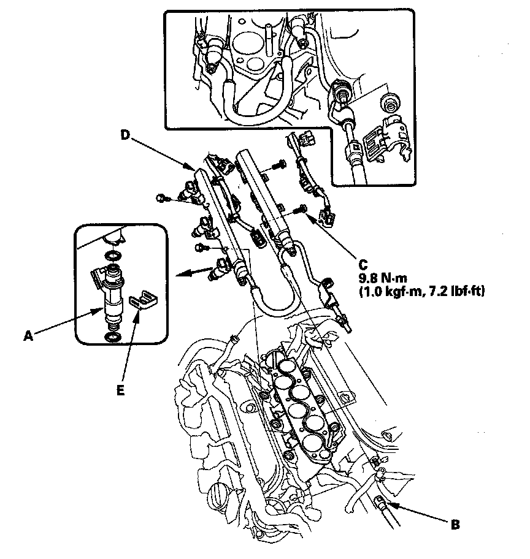
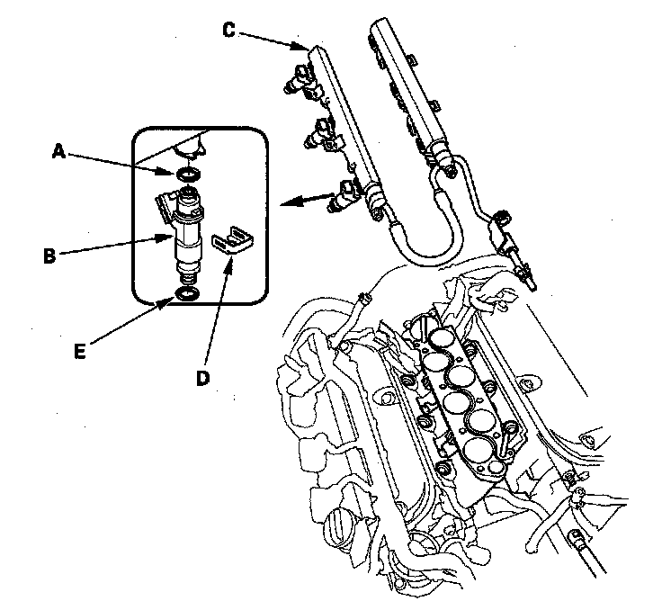

Fuel Injector: Service and Repair
Injector Replacement1. Relieve fuel pressure.
2. Remove the intake manifold.

3. Disconnect the connectors from the injectors (A).
4. Disconnect the quick-connect fitting (B).
5. Remove the fuel rail mounting bolts (C) from the fuel rail (D).
6. Remove the injector clip (E) from the fuel rail.
7. Remove the injectors from the rails.

8. Coat the new O-ring (A) with clean engine oil, and insert the injectors (B) into the fuel rail (C).
9. Install the injector clip (D).
10. Coat the new injector O-ring (E) with clean engine oil.
11. Install the injectors in the injector base.
12. Install the fuel rail mounting bolts.
13. Install the connectors on the injectors.
14. Connect the quick-connect fitting.
15. Turn the ignition switch ON (II), but do not operate the starter. After the fuel pump runs for about 2 seconds, the fuel pressure in the fuel line rises. Repeat this two or three times, then check for fuel leakage.
16. Install the intake manifold.